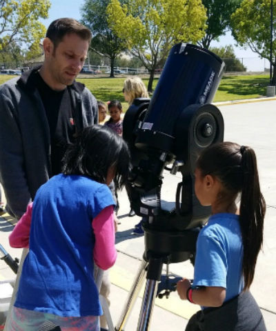

UCI Observatory
Althought the UCI Observatory was demolished in 2014, Professor Tammy Smecker-Hane has kept it's outreach program alive by continuing to schedule and organize Astronomy outreach events at near-by schools. At these events, UCI Physics & Astronomy Graduate Students take telescopes to elementary schools and conduct star parties in hopes of sparking interest in Astronomy in both student and parent alike.
